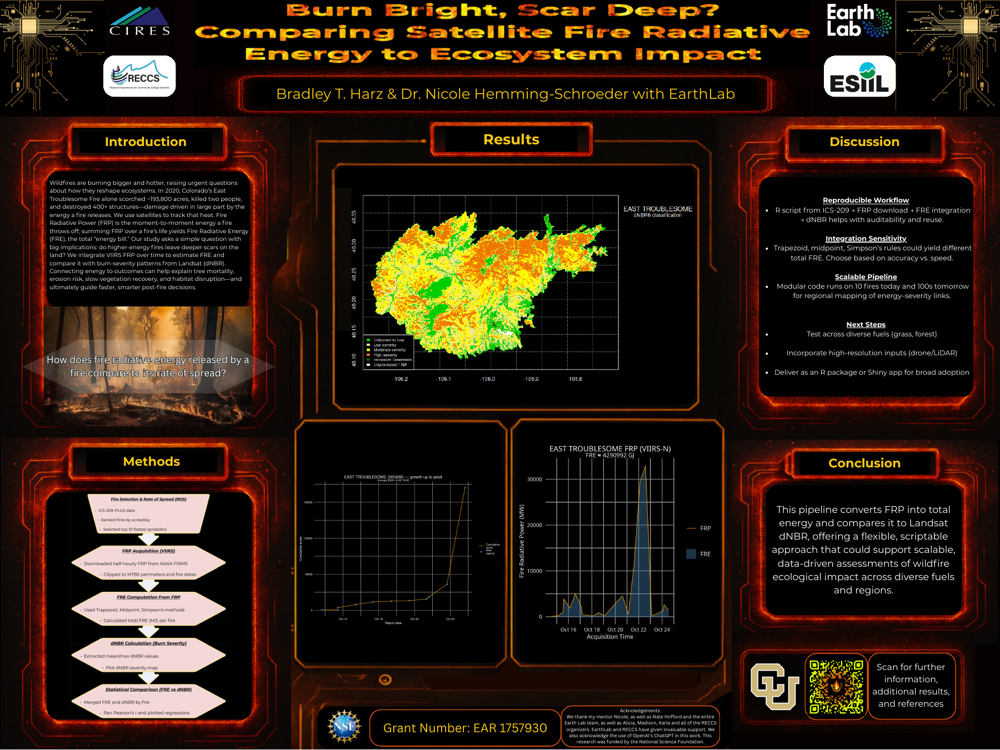
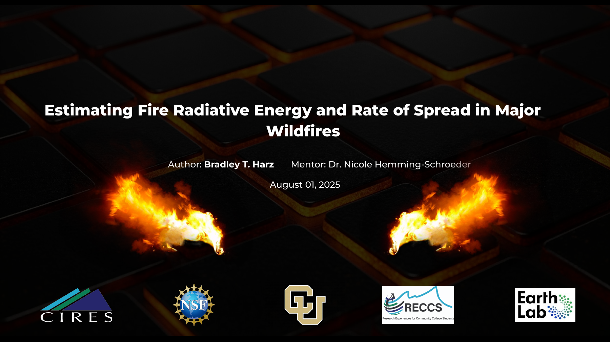

Skip to content
Home
Projects & Research
Awards & Certifications
Picture Blog
← Projects & Research
FRE vs dNBR
Project comparing fire radiative energy and burn severity.
Project Media
Poster

View Poster (PDF)
Oral Presentation

View Presentation (PDF)